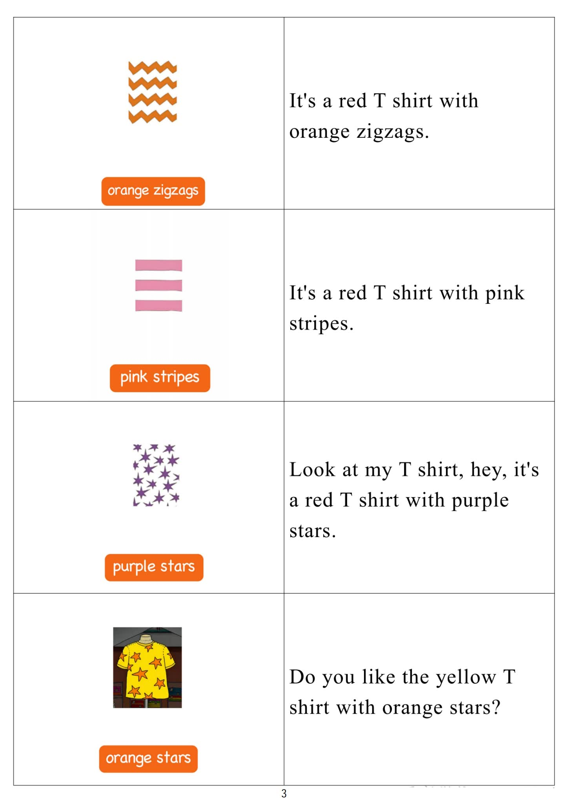

Day 2
Unit 1 · story
教材重点
网盘未提供逐日打卡原图；本级教材文件为“5.第五级单词卡.pdf”，以下重点结合单词卡与台词本整理，原文请看 Part 3。
Unit 1 · story · 7–8岁
come · play · count · listen
Hello, hello, my name's Steve.
台词本为机器转写，可能存在识别误差；不等同于视频逐字原声。
详细内容
Part 1 核心词汇
必须掌握 · 4 个查看橙色每日打卡 Day 2 原图

Part 2 跟读句型与句型拓展
左侧保留台词本原句，右侧为替换练习；拓展内容不是视频逐字台词。
Hello, hello, my name's Steve.
Hello, hello, it's time to play. It's time to play in English.
Speak, listen, read.
Right And count.
It's going to be great, oh, hello, boys and girls, sorry, I'm just speaking on the phone. One one moment.
Part 3 台词本全文
来源：第5级台词本 · 002.Wow!Orange - Unit 1 story.pdf。以下保留网盘 PDF 的机器转写文本，仅清理了文件路径页眉和空行。
Hello, hello, my name's Steve.
Hello, hello, it's time to play. It's time to play in English.
Speak, listen, read.
Right And count.
Come.
It's going to be great, oh, hello, boys and girls, sorry, I'm just speaking on the phone. One one moment.
Yeah, okay, so bye bye, we'll see you then.
Oh, sorry, I was speaking on the phone, hey, why don't you pretend to be speaking on the phone like
me?
Come on, copy me. Let's.
Speak, speak, speak on the phone, say with me, speak, speak, speak on the phone, and again speak,
speak, speak.
On the phone, well done, oh yes, maggie, but what do you want.
I was speaking on the phone, come on, let's play.
Sorry, maggie, I can't play now. We'll have fun later, though, I promise, yeah,
My boys and girls.
I want to play, but Steve is doing something. What's he doing And the winner of the game.
Is the person with the most points? Okay?
Hey, I'm reading a book.
You can pretend to be reading a book like me. Come on, let's.
Read, read, read a book, say it with me, let's read, read, read a book, and again, come on, let's.
Read read, read a book. Great.
I'm reading a book about party games here, we're going to have a party, wait, so what were he are you
doing.
Yes, maggie, what are you doing.
I'm reading a book, oh, come on, let's play. I can't play now, but we'll have fun later, I promise.
K-I have so one, two, three, four,
Uh ha, go, hey, I'm counting the sandwiches, the biscuits and the cakes.
You can pretend your.
Counting with me.
Come on, let's count, count, count, the biscuits, are you ready Let's go one two, three, four, five, six
seven, eight, nine, ten, eleven,
/
-
/5/002.Wow!Orange - Unit 1 story.txt[2022/3/29
星期二
6:51:47]
Twelve, OK, now let's count, count, count.
The sandwiches, are you ready One two, three, four, five, six, seven, eight, nine ten eleven, twelve.
Great, now let's count, count, count the cakes here we go, one, two, three, four five six seven, eight,
nine, ten, eleven.
Twelve Perfect, this is the party food for Maggie's great, yes, maggie, come on, let.
Maggie, I can't play now, we'll have fun later, I promise, oh,
Promises, promises.
Oh, hey, I'm listening to music.
But listening to music, I'm listening to music.
See, hey, you can pretend that you're listening to music like.
Well, let's.
Listen, listen, listen to music.
Come on, let's listen, listen, listen to music. Let's listen, listen, listen to music.
Great, hey, check it out.
I'm sorry, hey, come on, let's sorry.
I can't play now, but we will have fun very, very soon, I promise, a promise to Maggie.
Happy birthday.
From.
Oh, hey, I'm just writing my name in Maggie's birthday card. It's Maggie's birthday, oh, sh.
But it's a secret about the party.
Hey, you can pretend you're writing your name like me.
Come on, let's write, write, write your name, and again, right?
Right? Right? Your name, yeah, right, right, right? Your name.
Steve Great, I finished.
We're ready for the party. The only thing we need now is Maggie, no,
Stave doesn't want to play.
And today is my birthday.
Maggie, maggie, come here, come here, maybe Steve, what's the play?
She's nearly here, are you ready to shout, happy birthday, oh, here we go.
Happy birthday. Happy birthday, maggie.
This is going to be a crazy party.